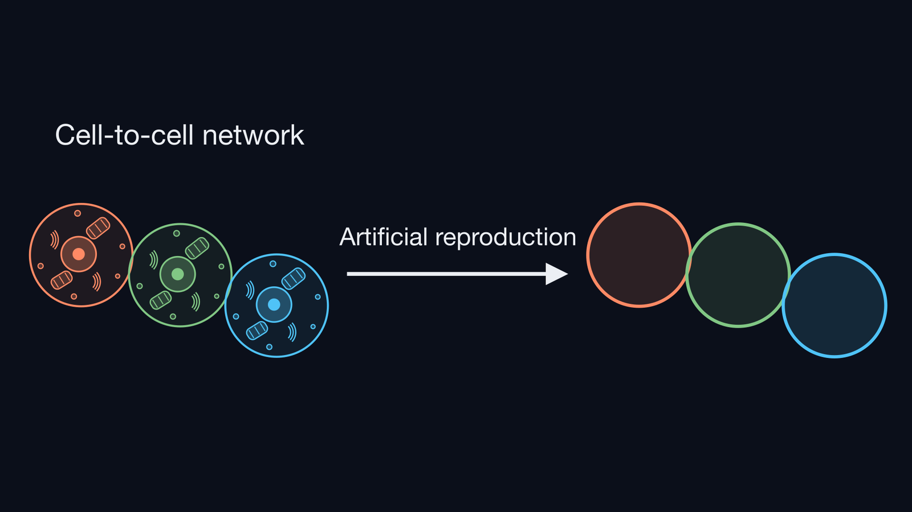

Project
Background

Living organisms are made of organs, and organs are made of cells. Cells do not work alone: each cell exchanges materials and signals with particular partners, and this cell-to-cell communication is the basis of how living systems function. To understand living things, we therefore need to understand the network of communicating cells.
Building such a network ourselves helps us understand how cells communicate. For this, we need artificial cells that we can build and control. We use GUVs (giant unilamellar vesicles): vesicles whose lipid membrane separates the inside from the outside, as a cell membrane does. The GUVs we use are about 10–100 µm across, close to the size of a cell. Studies that connect vesicles such as GUVs to each other have already been carried out [1][2].
Issue
Previous studies have connected vesicles such as GUVs and realized some of the elements required to reproduce a cell-to-cell network. Hadorn et al. prepared three types of micrometer-sized GUVs (mean diameters of 5–9 µm) and attached DNA to the surface of each type, which allowed them to control which GUVs bind to each other: GUVs carrying complementary DNA assembled, whereas GUVs carrying non-complementary DNA stayed solitary or were left out of the assemblies [1]. Chakraborty et al. attached proteins that bind to each other under blue light to the surfaces of two types of GUVs, and used light to make the GUVs adhere. They then showed that Ca²⁺, the content of a sender GUV, was transferred efficiently to a receiver GUV when the GUVs adhered [2].
However, controlling which partners GUVs bind to, or exchanging contents, is not enough to reproduce a cell-to-cell network. To say that a cell-to-cell network has been reproduced, we consider that four elements must be achieved: connecting with intended partners, connecting with an intended number of partners, exchanging contents between connected GUVs, and preventing leakage from unconnected GUVs.
Solution
As a GUV network that satisfies the four elements required to reproduce a cell-to-cell network, we propose ALiGN (Accurately Linkable GUV Network).
Connection
1. Connecting with intended partners: DNA strands with different sequences on the GUV surface let each GUV connect only to its intended partner.
2. Connecting with an intended number of partners: very short DNA strands with weak binding, together with a tuned DNA surface density, prevent aggregation so that each GUV connects only to the intended number of partners.
Material exchange
3. Exchanging contents between connected GUVs: α-hemolysin forms pores in the GUV membrane, opening a path for contents to move between connected GUVs.
4. Preventing leakage from unconnected GUVs: TRIMEB acts as a lid on the pores, which prevents the contents of GUVs that are not connected from leaking out.
References for the Project
[1] Hadorn, M., Boenzli, E., Sørensen, K. T., De Lucrezia, D., Hanczyc, M. M. & Yomo, T. Defined DNA-mediated assemblies of gene-expressing giant unilamellar vesicles. Langmuir 29, 15309–15319 (2013). https://doi.org/10.1021/la402621r ↩ Back to the text
[2] Chakraborty, T., Bartelt, S. M., Steinkühler, J., Dimova, R. & Wegner, S. V. Light controlled cell-to-cell adhesion and chemical communication in minimal synthetic cells. Chem. Commun. 55, 9448–9451 (2019). https://doi.org/10.1039/C9CC04768A ↩ Back to the text